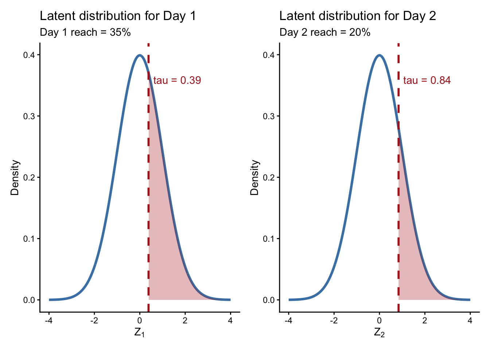
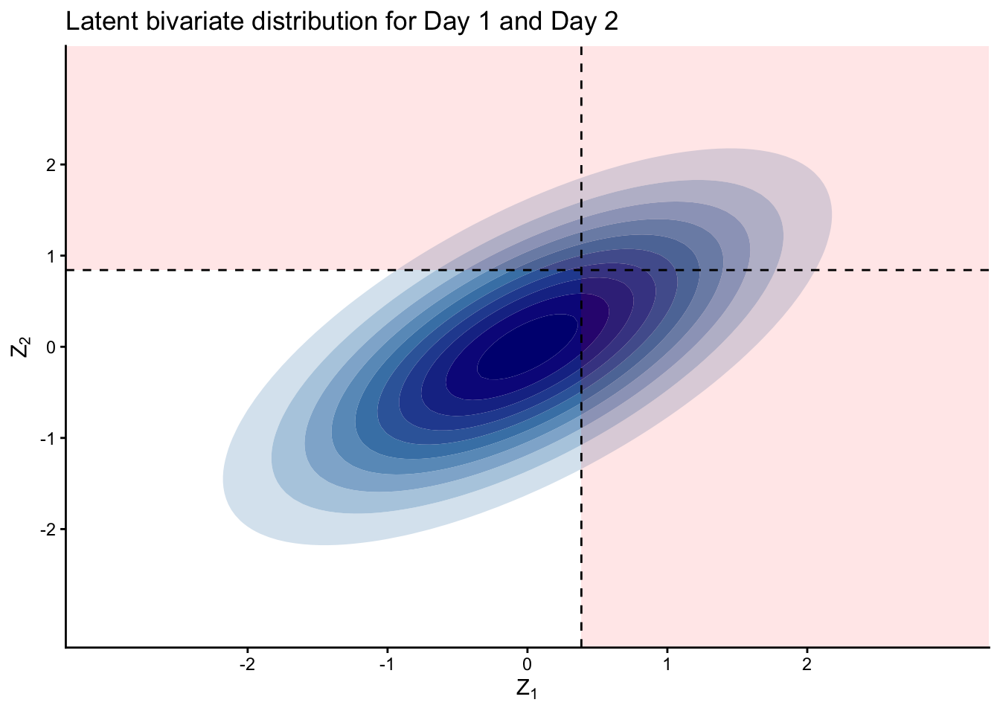
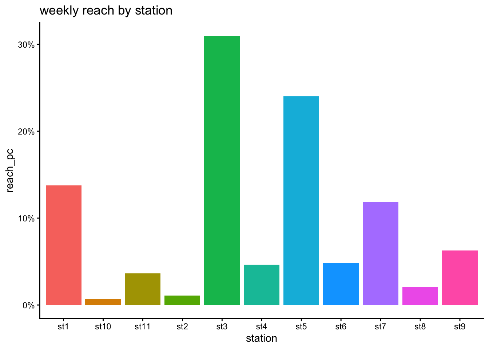
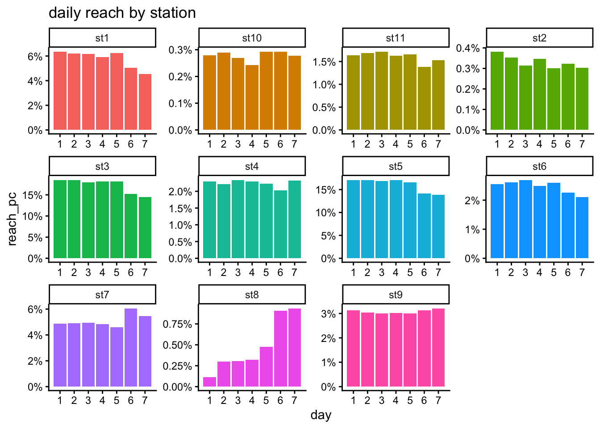
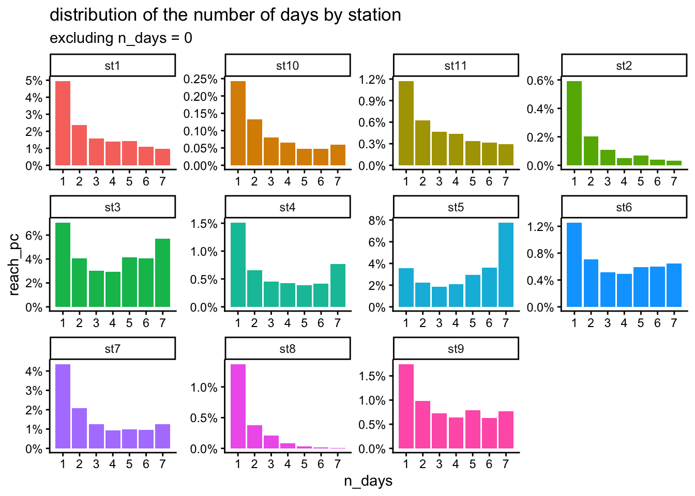
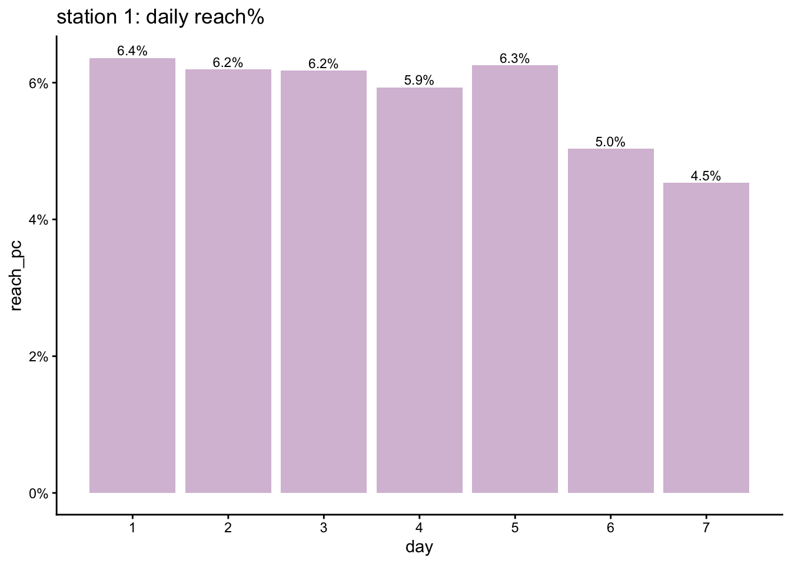
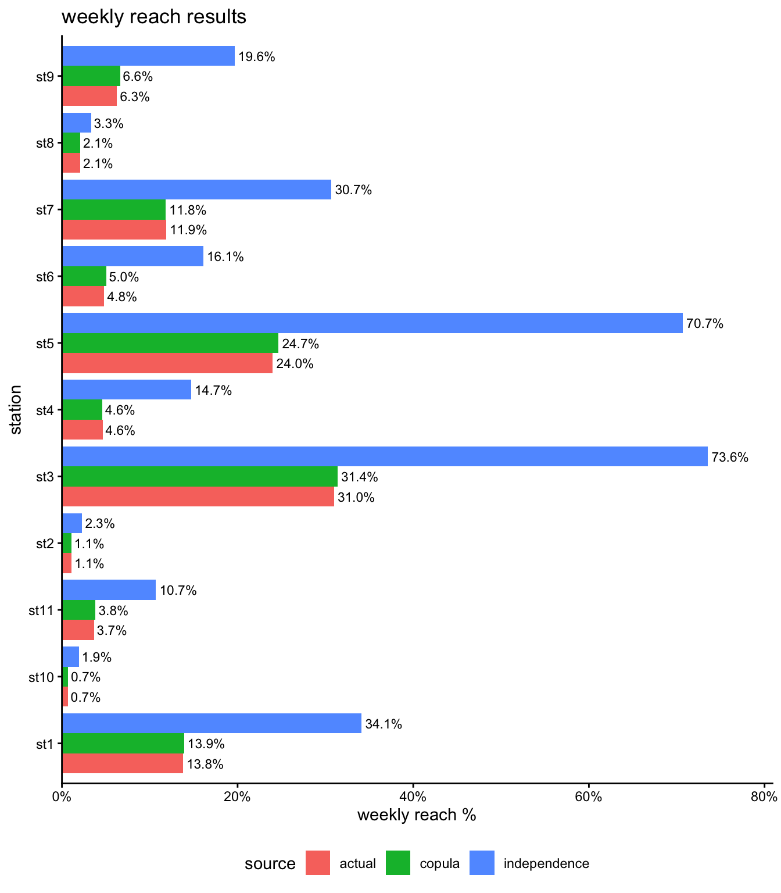

library(mvtnorm) # to use the multivariate normal distribution rmvnorm and its cumulative distribution pmvnorm
# make sure to load tidyverse after MASS so that the select function comes from dplyr
library(tidyverse)
library(psych) # for the pairs.panels and phi2tetra functions
library(patchwork) # to display plots side by side
library(latex2exp) # to use scientific notation on plots
options(java.parameters = c("-XX:+UseConcMarkSweepGC", "-Xmx32g"))
gc()
theme_set(theme_classic()) # sets the ggplot theme for the session
options(scipen = 999) # so that numbers don't display with the exponent
options(dplyr.summarise.inform = FALSE) # to suppress annoying grouping warningHere we show how we can use copulas, more specifically a multi-variate Normal distribution paired with a Tetrachoric correlation, to estimate weekly reach from daily reach.
1 the Tetrachoric correlation
1.1 definition
When it comes to measuring the association between binary variables, one possible approach is to use the Tetrachoric correlation.
This type of correlation relies on the idea that the binary variable actually comes from a latent normal distribution that has been dichotomised, such that values below a threshold become one outcome (e.g. 0, or “fail”) and values above become the other outcome (e.g. 1, or “pass”).
Take the case of 2 binary variables \(X_1\) and \(X_2\) with values 0 or 1. We assume these arise from the latent Normal variables \(Z_1\) and \(Z_2\):
\[ \begin{pmatrix} Z_1 \\ Z_2 \end{pmatrix} \sim N \left( \begin{pmatrix} 0 \\ 0 \end{pmatrix}, \begin{pmatrix} 1 & \sigma \\ \sigma & 1 \end{pmatrix} \right), \]
and then \(X_1\) and \(X_2\) are derived by applying a threshold to the continuous margins \(Z_1\) and \(Z_2\):
\[ X_1 = \begin{cases} 0 & \text{if } Z_1 \leq t_1, \\ 1 & \text{otherwise}, \end{cases} \qquad X_2 = \begin{cases} 0 & \text{if } Z_2 \leq t_2, \\ 1 & \text{otherwise}. \end{cases} \]
The thresholds \(t_1\) and \(t_2\) are determined from the observed marginal probabilities:
\[ P(X_1 = 0) = P(Z_1 \leq t_1) = \Phi(t_1), \]
\[ P(X_2 = 0) = P(Z_1 \leq t_1) = \Phi(t_2), \]
where \(\Phi(\cdot)\) is the standard normal cumulative distribution function.
The tetrachoric correlation is then the value of \(\sigma\) that reproduces the observed \(2 \times 2\) contingency table. In particular,
\[ P(X_1 = 0, X_2 = 0) = P(Z_1 \leq t_1, Z_2 \leq t_2) = \Phi_2(t_1, t_2; \sigma) \]
where \(\Phi_2(\cdot,\cdot;\sigma)\) denotes the bivariate normal CDF with correlation \(\sigma\).
In other words, the Tetrachoric correlation is the latent Pearson correlation between \(Z_1\) and \(Z_2\) that would generate the observed bivariate binary outcomes (i.e. the contingency table) after applying the thresholds to each margin.
1.2 illustrative example in 2 dimensions
Suppose we asked 100 respondents whether they listened to a radio station over 2 days:
- \(D_1\) is the reach on day 1
- \(D_2\) is the reach on day 2
Build the contingency table:
ct <- matrix(
data = c(60, 5, 20, 15),
nrow = 2,
byrow = TRUE,
dimnames = list(c("d1=0", "d1=1"), c("d2=0", "d2=1"))
)
ct d2=0 d2=1
d1=0 60 5
d1=1 20 15so 60/100 respondents didn’t listen on either day and 15/100 listened on both days.
Same as a dataframe:
df <- data.frame(
d1 = c(0,0,1,1),
d2 = c(0,1,0,1),
value = c(60,5,20,15)
) |>
mutate(
cell = paste0("p_", d1, d2),
p = value / sum(value)
)
df d1 d2 value cell p
1 0 0 60 p_00 0.60
2 0 1 5 p_01 0.05
3 1 0 20 p_10 0.20
4 1 1 15 p_11 0.15From the contingency table we see that the probability \(p_{00}\) that \(D_1 = 0\) and \(D_2 = 0\) is 60%.
Calculate the margins, i.e. the reach% of each day:
margins <- rbind(
df %>%
group_by(d1) %>%
summarise(value = sum(value)) %>%
mutate(
cat = d1,
day = "d1",
pc = value / sum(value)
) %>%
select(day, cat, pc),
df %>%
group_by(d2) %>%
summarise(value = sum(value)) %>%
mutate(
cat = d2,
day = "d2",
pc = value / sum(value)
) %>%
select(day, cat, pc)
) %>%
filter(cat == 1)
margins# A tibble: 2 × 3
day cat pc
<chr> <dbl> <dbl>
1 d1 1 0.35
2 d2 1 0.2 so the reach on day 1 is 35% and on day 2 it’s 20%.
We can use the function psych::tetrachoric to calculate the Tetrachoric correlation from the contingency table directly:
tetr_cor <- tetrachoric(ct)
tetr_corCall: tetrachoric(x = ct)
tetrachoric correlation
[1] 0.67
with tau of
d1=0 d2=0
0.39 0.84 This returns both the Tetrachoric correlation and the values of tau. These correspond to the quintiles for each margin such that:
\(P(D1 = 1) = P(Z_1 > \tau_1) = 1 - P(Z_1 \leq \tau_1) = 1 - 0.35\)
\(P(D2 = 1) = P(Z_2 > \tau_2) = 1 - P(Z_2 \leq \tau_2) = 1 - 0.2\)
In other words, for \(D_1\) it shows the threshold value such that 35% of its distribution is to the right of the threshold.
qnorm(p = 1 - 0.35)[1] 0.3853205Likewise for \(D_2\) it shows the threshold value such that 20% of its distribution is to the right of the threshold.
qnorm(p = 1 - 0.2)[1] 0.8416212This is what the underlying Normal marginal distributions look like, with their thresholds:
threshold_d1 <- tetr_cor$tau[1]
threshold_d2 <- tetr_cor$tau[2]
df <- data.frame(x = seq(-4, 4, length.out = 500))
df$y <- dnorm(df$x)
p1 <- ggplot(df, aes(x, y)) +
geom_line(colour = "steelblue", linewidth = 1.2) +
geom_area(data = subset(df, x >= threshold_d1),
fill = "firebrick", alpha = 0.3) +
geom_vline(xintercept = threshold_d1, linetype = "dashed",
colour = "firebrick", linewidth = 1) +
annotate(
"text",
x = threshold_d1,
y = max(df$y) * 0.9,
label = paste0("tau = ", round(threshold_d1, 2)),
colour = "firebrick",
hjust = -0.1
) +
labs(
title = "Latent distribution for Day 1",
subtitle = "Day 1 reach = 35%",
x = TeX("$Z_1$"),
y = "Density"
)
p2 <- ggplot(df, aes(x, y)) +
geom_line(colour = "steelblue", linewidth = 1.2) +
geom_area(data = subset(df, x >= threshold_d2),
fill = "firebrick", alpha = 0.3) +
geom_vline(xintercept = threshold_d2, linetype = "dashed",
colour = "firebrick", linewidth = 1) +
annotate(
"text",
x = threshold_d2,
y = max(df$y) * 0.9,
label = paste0("tau = ", round(threshold_d2, 2)),
colour = "firebrick",
hjust = -0.1
) +
labs(
title = "Latent distribution for Day 2",
subtitle = "Day 2 reach = 20%",
x = TeX("$Z_2$"),
y = "Density"
)
p1 + p2
The shaded area under the curve covers 35% of the distribution for day 1 and 20% for day 2.
Now we can look at their underlying bivariate Normal distribution, using their Tetrachoric correlation as sigma:
# grid
x <- seq(-3, 3, length.out = 100)
y <- seq(-3, 3, length.out = 100)
grid <- expand.grid(x = x, y = y)
mu <- c(0, 0)
sigma <- matrix(c(1, tetr_cor$rho, tetr_cor$rho, 1), 2)
grid$z <- dmvnorm(cbind(grid$x, grid$y), mean = mu, sigma = sigma)
ggplot(grid, aes(x, y, z = z)) +
geom_contour_filled() +
scale_fill_manual(
values = colorRampPalette(c("white", "steelblue", "navy"))(11)
) +
# --- shaded quadrants (exclude bottom-left) ---
annotate("rect", xmin = threshold_d1, xmax = Inf,
ymin = threshold_d2, ymax = Inf,
fill = "red", alpha = 0.1) +
annotate("rect", xmin = -Inf, xmax = threshold_d1,
ymin = threshold_d2, ymax = Inf,
fill = "red", alpha = 0.1) +
annotate("rect", xmin = threshold_d1, xmax = Inf,
ymin = -Inf, ymax = threshold_d2,
fill = "red", alpha = 0.1) +
# --- threshold lines ---
geom_vline(xintercept = threshold_d1, linetype = "dashed") +
geom_hline(yintercept = threshold_d2, linetype = "dashed") +
scale_x_continuous(breaks = seq(-2,2, by = 1)) +
scale_y_continuous(breaks = seq(-2,2, by = 1)) +
theme(legend.position = "none") +
labs(
title = "Latent bivariate distribution for Day 1 and Day 2",
x = TeX("$Z_1$"), y = TeX("$Z_2$")
)
The shaded area corresponds to the reach on either day, i.e. the combined reach:
\[P(D_1 = 1 | D_2 = 1) = 1 - P(D1 = 0, D2 = 0)\]
We can calculate the probability \(p_{00}\) that \(D_1 = 0\) and \(D_2 = 0\) with:
\[p_{00} = \Phi_2(\tau_1, \tau_2; \sigma),\]
# Calculate the joint probability
# that D1=0 and D2=0:
p_00 <- pmvnorm(
lower = rep(-Inf, 2),
upper = tetr_cor$tau,
sigma = sigma
)
p_00 <- as.numeric(p_00)
scales::percent(p_00) [1] "60%"This matches the observed \(p_{00}\). Similarly we can derive the other probabilities \(p_{01}\), \(p_{10}\), \(p_{11}\) by changing the lower and upper values in pmvnorm:
\[p_{11} = P(D_1=1, D_2=1) = P(Z_1 > \tau_1, \; Z_2 > \tau_2) = P(\tau_1 \leq Z_1 \leq +\infty,\; \tau_2 \leq Z_2 \leq +\infty) \]
so the lower bounds are \([\tau_1, \tau_2]\) and the upper bounds are \([+\infty, +\infty]\) :
p_11 <- pmvnorm(
lower = tetr_cor$tau,
upper = rep(Inf, 2),
sigma = sigma
)
p_11 <- as.numeric(p_11)
scales::percent(p_11) [1] "15%"\[p_{01} = P(D_1=0, D_2=1) = P(Z_1 \leq \tau_1, \; Z_2 > \tau_2) = P(-\infty \leq Z_1 \leq \tau_1, \; \tau_2 \leq Z_2 \leq +\infty) \]
p_01 <- pmvnorm(
lower = c(-Inf, tetr_cor$tau[2]),
upper = c(tetr_cor$tau[1], Inf),
sigma = sigma
)
p_01 <- as.numeric(p_01)
scales::percent(p_01) [1] "5%"\[p_{10} = P(D_1=1, D_2=0) = P(Z_1 > \tau_1, \; Z_2 \leq \tau_2) = P(\tau_1 \leq Z_1 \leq +\infty, \; -\infty \leq Z_2 \leq \tau_2) \]
p_10 <- pmvnorm(
lower = c(tetr_cor$tau[1], -Inf),
upper = c(Inf, tetr_cor$tau[2]),
sigma = sigma
)
p_10 <- as.numeric(p_10)
scales::percent(p_10) [1] "20%"This shows that using a multivariate Normal distribution with the Tetrachoric correlation and the threshold values of each margin, we can retrieve the various probabilities of the contingency table. In this simple example we only had 2 days but with this method we can retrieve the full frequency distribution of the number of days someone was reached: 0, 1 or 2 days out of 2. Extending to 7 days is just as easy.
2 using radio listening dataset
This dataset was created using R’s synthpop package and is based on the daily radio listening of 11 stations over a week from RAJAR data in 2022. It contains 100k synthetic respondents and is available on request.
db <- read.csv("syn_daily_listening_db.csv")
summary(db) id station day mins
Min. : 1 Length:7700000 Min. :1 Min. : 0.000
1st Qu.: 25001 Class :character 1st Qu.:2 1st Qu.: 0.000
Median : 50000 Mode :character Median :4 Median : 0.000
Mean : 50000 Mean :4 Mean : 7.493
3rd Qu.: 75000 3rd Qu.:6 3rd Qu.: 0.000
Max. :100000 Max. :7 Max. :1440.000 db |>
summarise(
n_rows = n(),
n_days = n_distinct(day),
n_stations = n_distinct(station),
n_resps = n_distinct(id)
) n_rows n_days n_stations n_resps
1 7700000 7 11 100000Weekly reach for each station:
weekly_reach <- db |>
group_by(id, station) |>
summarise(n_days = sum(mins > 0)) |>
group_by(station) |>
summarise(reach = sum(n_days > 0)) |>
ungroup() |>
mutate(reach_pc = reach / n_distinct(db$id))
weekly_reach |>
ggplot(aes(x = station, y = reach_pc, fill = station)) +
geom_bar(stat = "identity") +
scale_y_continuous(labels = scales::percent) +
labs(title = "weekly reach by station") +
theme(legend.position = "none")
Daily reach for each station:
daily_reach <- db |>
group_by(station, day) |>
summarise(reach = sum(mins > 0)) |>
ungroup() |>
mutate(reach_pc = reach / n_distinct(db$id))
daily_reach |>
ggplot(aes(x = day, y = reach_pc, fill = station)) +
geom_bar(stat = "identity") +
scale_x_continuous(breaks = 1:7) +
scale_y_continuous(labels = scales::percent) +
facet_wrap(~station, scale = "free") +
labs(title = "daily reach by station") +
theme(legend.position = "none")
daily_freq_distr <- db |>
group_by(id, station) |>
summarise(n_days = sum(mins > 0)) |>
group_by(station, n_days) |>
summarise(reach = n()) |>
group_by(station) |>
mutate(
reach_pc = reach / sum(reach),
source = "actual"
)
daily_freq_distr |>
filter(n_days > 0) |>
ggplot(aes(x = n_days, y = reach_pc, fill = station)) +
geom_bar(stat = "identity") +
scale_x_continuous(breaks = 1:7) +
scale_y_continuous(labels = scales::percent) +
facet_wrap(~station, scales = "free") +
labs(
title = "distribution of the number of days by station",
subtitle = "excluding n_days = 0"
) +
theme(legend.position = "none")
=> we see different shapes for the distribution of the number of days listening by users: in particular station 5 shows a strong skew towards users who listen every day of the week, whereas station 1 has a strong incidence of users who only listened on one day out of 7.
If all we had were the aggregated daily reach for each station and a correlation matrix, could we estimate the weekly reach?
2.1 example with one station
Let’s walk through the process with the first station.
weekly_reach |>
filter(station == "st1")# A tibble: 1 × 3
station reach reach_pc
<chr> <int> <dbl>
1 st1 13771 0.138The actual weekly reach for station 1 is 13.8%.
daily_reach |>
filter(station == "st1") |>
ggplot(aes(x = day, y = reach_pc)) +
geom_bar(stat = "identity", fill = "thistle") +
scale_x_continuous(breaks = 1:7) +
scale_y_continuous(labels = scales::percent) +
geom_text(
aes(label = scales::percent(reach_pc, accuracy = 0.1)),
size = 3,
vjust = -0.3
) +
labs(title = "station 1: daily reach%")
The weekly reach \(R_w\) is bounded by these 2 values:
- in the case where we reach the same people everyday, then it is at least the maximum value of the daily reach levels, so 6.4%.
- in the case where we reach entirely new people everyday, then it is at most the sum of the daily reach levels, so 40.5%.
\[R_w \in [6.4\%, 40,5\%] \]
That’s a big range.
If we had no information on the habitual nature of radio listening throughout the week, we could use the assumption of independence between days to estimate the weekly reach:
\[R_{w, \text{independence}} = 1 - \prod_{d=1}^7 (1 - R_d)\]
daily_reach |>
filter(station == "st1") |>
summarise(indep_weekly_reach_pc = 1 - prod(1 - reach_pc))# A tibble: 1 × 1
indep_weekly_reach_pc
<dbl>
1 0.341=> if we assume the days are independent then the estimated weekly reach for the first station would be 34.1% which is way more than the actual weekly reach of 13.8% and quite close to the maximum possible value.
To get the estimate using copulas, we need 2 ingredients:
- the daily margins and their corresponding quantile (threshold) on a standard normal curve Z ~ N(0,1).
- the Tetrachoric correlation between all 21 possible pairs of days.
Then we can use them in a multivariate normal cumulative distribution to estimate the value that corresponds to day 1 = 0, day 2 = 0, … , day 7 = 0:
\[ \begin{aligned} R_{w, \text{copula}} &= 1 - P(D_1=0, \ldots, D_7=0) \\ &= 1 - P(Z_1 \leq \tau_1,\ldots, Z_7 \leq \tau_7) \\ &= 1 - \Phi_7(\tau_1,\tau_2,\tau_3,\tau_4,\tau_5,\tau_6,\tau_7,\sigma) \end{aligned} \]
Starting with the daily margins, for each day we find the quantile that corresponds to the station’s daily reach:
thresholds <- daily_reach |>
filter(station == "st1") |>
# Find the threshold points on a standard normal curve Z ~ N(0,1)
# These represent the boundaries where 0 becomes 1:
mutate(threshold = qnorm(1-reach_pc))
thresholds# A tibble: 7 × 5
station day reach reach_pc threshold
<chr> <int> <int> <dbl> <dbl>
1 st1 1 6360 0.0636 1.53
2 st1 2 6195 0.0620 1.54
3 st1 3 6175 0.0618 1.54
4 st1 4 5933 0.0593 1.56
5 st1 5 6253 0.0625 1.53
6 st1 6 5036 0.0504 1.64
7 st1 7 4534 0.0453 1.69Now we calculate the tetrachoric correlation for all possible pairs of days for station 1. To do this we need a matrix showing each respondent as a row and each day as a column, and the values are 0 or 1, indicating if the person has listen to the station that day:
days <- paste0("d", 1:7)
usage_mat <- db |>
filter(station == "st1") |>
# the Tetrachoric correlation requires binary data:
mutate(
day = paste0("d", day),
reach_flag = if_else(mins > 0 , 1, 0)
) |>
select(id, day, reach_flag) |>
pivot_wider(
names_from = day,
values_from = reach_flag,
values_fill = 0
) |>
select(all_of(days)) |>
as.matrix()
dim(usage_mat)[1] 100000 7Check the first 5 respondents:
usage_mat[1:5,] d1 d2 d3 d4 d5 d6 d7
[1,] 1 1 1 1 1 0 0
[2,] 0 0 0 0 0 0 0
[3,] 0 1 1 1 0 0 0
[4,] 0 0 0 0 0 0 0
[5,] 0 0 0 0 0 0 0Check we match the daily reach:
colSums(usage_mat)/nrow(usage_mat) d1 d2 d3 d4 d5 d6 d7
0.06360 0.06195 0.06175 0.05933 0.06253 0.05036 0.04534 which matches:
daily_reach |>
filter(station == "st1") |>
pull(reach_pc)[1] 0.06360 0.06195 0.06175 0.05933 0.06253 0.05036 0.04534Calculate the tetrachoric correlation:
tetra <- tetrachoric(usage_mat)$rhotetra d1 d2 d3 d4 d5 d6 d7
d1 1.0000000 0.9096146 0.8881553 0.8886857 0.8598506 0.7849536 0.7631411
d2 0.9096146 1.0000000 0.9000754 0.8891819 0.8713600 0.7786639 0.7538051
d3 0.8881553 0.9000754 1.0000000 0.8899807 0.8716810 0.7773050 0.7681892
d4 0.8886857 0.8891819 0.8899807 1.0000000 0.8807882 0.7849794 0.7573419
d5 0.8598506 0.8713600 0.8716810 0.8807882 1.0000000 0.7920922 0.7615531
d6 0.7849536 0.7786639 0.7773050 0.7849794 0.7920922 1.0000000 0.7946069
d7 0.7631411 0.7538051 0.7681892 0.7573419 0.7615531 0.7946069 1.0000000Using this tetrachoric correlation, we can now estimate the probability that d1=0, d2=0, …, d7=0:
p_none <- pmvnorm(
lower = rep(-Inf, ncol(tetra)),
upper = thresholds$threshold,
sigma = tetra
)
p_none <- as.numeric(p_none)
# therefore the estimated weekly reach is 1 - p_none:
1-p_none[1] 0.1388422This is indeed the actual weekly reach.
2.2 repeat for all stations
For each station we calculate the tetrachoric correlation between all possible pairs of days:
days <- paste0("d", 1:7)
stations <- paste0("st", 1:11)
my_list <- list()
for(i in 1:length(stations)){
thresholds <- daily_reach |>
filter(station == stations[i]) |>
# Find the threshold points on a standard normal curve Z ~ N(0,1)
# These represent the boundaries where 0 becomes 1:
mutate(threshold = qnorm(1-reach_pc))
indep_weekly_reach_pc <- thresholds |>
summarise(weekly_reach_pc = 1 - prod(1-reach_pc)) |>
pull(weekly_reach_pc)
actual_weekly_reach_pc <- weekly_reach |>
filter(station == stations[i]) |>
pull(reach_pc)
usage_mat <- db |>
mutate(
reach_flag = if_else(mins > 0, 1, 0),
day = paste0("d", day)
) |>
filter(station == stations[i]) |>
select(id, day, reach_flag) |>
pivot_wider(
names_from = day,
values_from = reach_flag,
values_fill = 0
) |>
select(all_of(days)) |>
as.matrix()
# Calculate the tetrachoric correlation:
tetra <- tetrachoric(usage_mat)$rho
# Calculate the joint probability that d1=0, d2=0, ..., d7=0
p_none <- pmvnorm(
lower = rep(-Inf, ncol(tetra)),
upper = thresholds$threshold,
sigma = tetra
)
# Convert to a standard numeric value
p_none <- as.numeric(p_none)
my_list[[i]] <- data.frame(
station = stations[i],
metric = "weekly_reach_pc",
actual = actual_weekly_reach_pc,
copula = 1 - p_none,
independence = indep_weekly_reach_pc
)
}results <- bind_rows(my_list)
head(results) station metric actual copula independence
1 st1 weekly_reach_pc 0.13771 0.13888950 0.34111691
2 st2 weekly_reach_pc 0.01092 0.01067514 0.02298067
3 st3 weekly_reach_pc 0.30968 0.31362116 0.73551756
4 st4 weekly_reach_pc 0.04627 0.04588065 0.14703471
5 st5 weekly_reach_pc 0.24010 0.24652022 0.70690391
6 st6 weekly_reach_pc 0.04816 0.05040226 0.16086376Compare the results:
results |>
pivot_longer(
actual:independence,
names_to = "source",
values_to = "weekly_reach_pc"
) |>
ggplot(aes(x = weekly_reach_pc, y = station, fill = source)) +
geom_bar(stat = "identity", position = "dodge") +
scale_x_continuous(
labels = scales::percent,
expand = expansion(mult = c(0, 0.1))
) +
geom_text(
aes(label = scales::percent(weekly_reach_pc, accuracy = 0.1)),
position = position_dodge(width = 0.9),
hjust = -0.1,
size = 3
) +
labs(
title = "weekly reach results",
x = "weekly reach %"
) +
theme(legend.position = "bottom")
This shows that using the copula approach, the estimated weekly reach is always very close to the actual value. Using the assumption of independence between days would lead to massively inflated results which don’t take into account the repeated nature of listening to a station between days.
3 conclusion
Given just aggregate values for the daily reach and a correlation matrix, we showed how we can get a realistic estimate of the weekly reach that takes into account the usage overlaps between days. This approach can be used with the top line results we may get from social media analytics and an inter-day correlation matrix from a separate study.